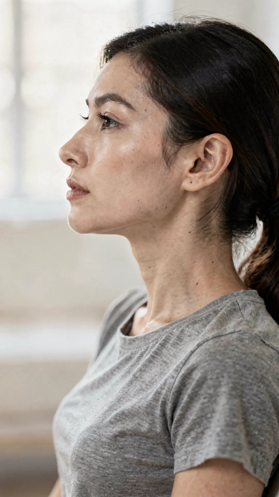
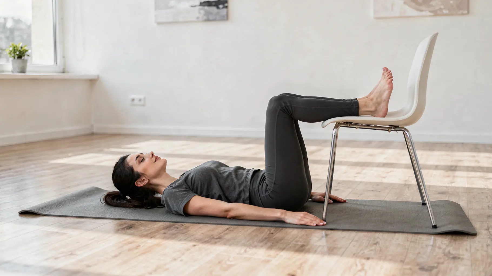

Warum entstehen Nackenschmerzen bei Büroarbeit?
Wer täglich mehr als acht Stunden am Computer arbeitet, belastet seine Halswirbelsäule erheblich. Ab etwa dem 35. Lebensjahr steigt das Risiko für Nackenbeschwerden, da der Körper sich langsam verändert: Die Muskulatur verliert ohne regelmäßiges Training an Kraft, Gelenke werden weniger beweglich und die tiefen stabilisierenden Muskeln der Wirbelsäule arbeiten nicht mehr so effizient. Gleichzeitig führen langes Sitzen, Bewegungsmangel und beruflicher Stress zu einer dauerhaft erhöhten Muskelspannung. Die Folge sind häufig Verspannungen, Schmerzen sowie Bewegungseinschränkungen im Bereich von Nacken, Schultern und oberem Rücken.
Warum treten Nackenschmerzen ab 35 häufiger auf?
- Weniger Muskelkraft: Ohne regelmäßiges Krafttraining nimmt die Muskelmasse langsam ab. Dadurch fehlt der Halswirbelsäule wichtige Stabilität.
- Steifere Gelenke: Bewegungsmangel reduziert die Gelenkbeweglichkeit und erhöht die Belastung der Muskulatur.
- Schlechtere Durchblutung: Langes Sitzen verringert die Sauerstoffversorgung der Muskeln. Sie ermüden schneller und verspannen leichter.
- Mehr Stress: Dauerhafter Stress erhöht die Muskelspannung – besonders im Nacken- und Schulterbereich.
- Geringere Regenerationsfähigkeit: Der Körper kann Fehlhaltungen nicht mehr so gut ausgleichen wie in jungen Jahren. Kleine Belastungen führen daher schneller zu anhaltenden Beschwerden.
Unser Körper wurde für Bewegung entwickelt – nicht für stundenlanges Sitzen.
Während der Bildschirmarbeit wird der Kopf häufig mehrere Zentimeter nach vorne geschoben. Dadurch erhöht sich die Belastung auf die Halswirbelsäule erheblich.
Bereits eine leichte Vorneigung des Kopfes kann die Belastung der Nackenmuskulatur deutlich erhöhen. Die Folge sind:
- ✔ verspannte Nackenmuskulatur
- ✔ Schulterverspannungen
- ✔ eingeschränkte Beweglichkeit
- ✔ Spannungskopfschmerzen
- ✔ Schwindelgefühl
- ✔ Augenermüdung
- ✔ Schmerzen zwischen den Schulterblättern
Schon kleine Veränderungen können Großes bewirken.
💧 Ausreichend trinken
Eine ausreichende Flüssigkeitszufuhr unterstützt den Stoffwechsel und die Versorgung von Muskeln, Bandscheiben und anderem Gewebe. Wer regelmäßig trinkt, kann die normale Muskelfunktion unterstützen und Verspannungen vorbeugen.
Trinken Sie möglichst über den ganzen Tag verteilt – zum Beispiel jede Stunde ein Glas Wasser. So fällt es leichter, den täglichen Flüssigkeitsbedarf zu erreichen, als wenn Sie erst trinken, wenn bereits Durst aufkommt.
Praktisch sind Trinkflaschen mit einer Zeitskala. Sie erinnern daran, regelmäßig zu trinken und helfen dabei, den eigenen Wasserkonsum im Blick zu behalten.
SAls einfache Faustregel gilt: Etwa 35 ml Wasser pro Kilogramm Körpergewicht pro Tag. Eine Person mit 70 kg benötigt also ungefähr 2,5 Liter Flüssigkeit täglich. Bei Hitze, Sport oder körperlicher Arbeit kann der Bedarf entsprechend höher sein.
🚶 Bewegung
🚶 Bewegung
Stehen Sie mindestens einmal pro Stunde auf. Ideal sind etwa 5 bis 10 Minuten Bewegung, bevor Sie sich wieder hinsetzen. Gehen Sie ein paar Schritte, strecken Sie den Körper oder bewegen Sie Schultern und Nacken bewusst. Jede Form von Bewegung hilft, die Muskulatur zu aktivieren und die Wirbelsäule zu entlasten.
Ebenso wichtig ist der regelmäßige Wechsel der Sitzposition. Vermeiden Sie es, über Stunden in derselben Haltung zu bleiben. Wechseln Sie zwischen verschiedenen Sitzmöglichkeiten, zum Beispiel einem ergonomischen Bürostuhl, einem Pezziball oder einem Sitzkissen (Balance- oder Luftkissen). Diese kleinen Veränderungen fördern natürliche Ausgleichsbewegungen und verhindern, dass die Muskulatur dauerhaft einseitig belastet wird.
🖥 Ergonomie
Eine ergonomische Sitzposition bildet die Grundlage: Der Monitor sollte sich auf Augenhöhe befinden, die Füße stehen flach auf dem Boden, die Schultern bleiben entspannt und die Unterarme liegen locker auf dem Schreibtisch.
Noch wichtiger als die perfekte Haltung ist jedoch, sie regelmäßig zu verändern. Unser Körper ist für Bewegung gemacht – nicht für stundenlanges Sitzen in derselben Position. Stehen Sie mehrmals täglich auf, strecken Sie die Arme über den Kopf, bewegen Sie die Schultern, drehen Sie den Kopf langsam nach rechts und links und gehen Sie einige Schritte. Schon wenige Minuten Bewegung pro Stunde können Nacken und Rücken deutlich entlasten.
Höhenverstellbare Schreibtische sind eine hervorragende Möglichkeit, zwischen Sitzen und Stehen zu wechseln. Auch das zeitweise Sitzen auf einem Pezziball kann kleine Ausgleichsbewegungen fördern und langes statisches Sitzen reduzieren. Wichtig ist jedoch, regelmäßig zwischen den verschiedenen Positionen zu wechseln.
Ein Gymnastikball eignet sich außerdem hervorragend für sanfte Mobilisationsübungen. In Rückenlage oder Bauchlage auf dem Ball lässt sich die Wirbelsäule schonend entlasten. Kreisende Bewegungen des Beckens fördern die Beweglichkeit von Becken und Hüfte und unterstützen die natürliche Gelenkbewegung – eine wohltuende Abwechslung nach vielen Stunden am Schreibtisch.
Die häufigste Ursache moderner Nackenschmerzen
Viele Büroangestellte entwickeln im Laufe der Jahre eine sogenannte Forward Head Posture. Dabei befindet sich der Kopf dauerhaft vor der Körperachse. Dadurch müssen die Muskeln im Nacken ständig gegen das Gewicht des Kopfes arbeiten.
Langfristig können entstehen:
- Verspannungen
- Kopfschmerzen
- Schmerzen zwischen den Schulterblättern
- eingeschränkte Beweglichkeit
- Augenbeschwerden
- Schwindel
Merke
Nicht die Halswirbelsäule ist meistens das Problem, sondern die dauerhaft ungünstige Haltung.
Je früher Sie Ihre Haltung verbessern, desto einfacher lassen sich Beschwerden vermeiden.
Online Termin buchenDie besten Übungen gegen Nackenschmerzen im Büro
Bereits wenige Minuten Bewegung pro Stunde können helfen, Verspannungen zu lösen, die Durchblutung zu fördern und Schmerzen nachhaltig vorzubeugen.

1. Doppelkinn (Chin Tuck)
Die Doppelkinn-Übung gehört zu den wirksamsten Übungen bei Nackenschmerzen, die durch langes Sitzen und Bildschirmarbeit entstehen. Sie aktiviert die tiefe Halsmuskulatur und hilft dabei, den Kopf wieder über der Wirbelsäule auszurichten. Dadurch werden die Muskulatur entlastet und die Belastung der Halswirbelsäule reduziert.
Dadurch werden Muskeln, Bänder, Bandscheiben und Nervenstrukturen entlastet.
Ausführung
- Kopf gerade halten.
- Kinn langsam nach hinten ziehen.
- Keine Bewegung nach unten.
- 5 Sekunden halten.
- 10 bis 15 Wiederholungen.

2. Schulterkreisen
Verspannte Schultern gehören zu den häufigsten Ursachen für Nackenschmerzen – besonders bei Menschen, die viele Stunden am Computer arbeiten. Regelmäßiges Schulterkreisen fördert die Durchblutung, lockert die Muskulatur und verbessert die Beweglichkeit des Schultergürtels. Schon 10 bis 15 langsame Kreisbewegungen nach hinten, mehrmals täglich, können Verspannungen lösen und den Nacken spürbar entlasten.
3. Genug Wasser trinken
Eine ausreichende Flüssigkeitszufuhr unterstützt Muskeln, Faszien und Bandscheiben. Trinken Sie regelmäßig über den Tag verteilt – idealerweise jede Stunde ein Glas Wasser. Trinkflaschen mit Zeitskala können dabei helfen, das tägliche Trinkziel zu erreichen.
Als einfache Faustregel gelten etwa 35 ml Wasser pro Kilogramm Körpergewicht und Tag. Bei 70 kg entspricht das ungefähr 2,5 Litern. Bei Hitze oder körperlicher Aktivität kann der Bedarf höher sein.
4. Arme über den Kopf strecken
Nach jeder Stunde Sitzen heben Sie beide Arme etwa 20 Mal langsam über den Kopf.
- Brustkorb öffnet sich.
- Schultergelenke werden mobilisiert.
- Die Brustmuskulatur wird gedehnt.
- Die Wirbelsäule richtet sich auf.
5. Augen entspannen
Langes Arbeiten am Bildschirm belastet nicht nur die Augen, sondern erhöht auch die Muskelspannung im Nacken.
Schauen Sie alle 20 Minuten für etwa 20 Sekunden in die Ferne.
Blinzeln Sie bewusst häufiger und schließen Sie zwischendurch für einige Sekunden die Augen.
6. Alle 60 Minuten aufstehen
Unser Körper liebt Bewegung. Stehen Sie spätestens nach einer Stunde für mindestens 10 Minuten auf.
- Gehen Sie einige Schritte.
- Bewegen Sie die Schultern.
- Trinken Sie Wasser.
- Atmen Sie tief durch.
Wer einen höhenverstellbaren Schreibtisch besitzt, sollte regelmäßig zwischen Sitzen und Stehen wechseln.
7. Akupressurkissen
Ein Akupressurkissen kann die lokale Durchblutung fördern und verspannte Muskulatur entspannen.
Viele Menschen empfinden 10 bis 20 Minuten täglich als angenehm.
Es ersetzt keine Physiotherapie, kann aber eine sinnvolle Ergänzung sein.
8. Beine auf einem Stuhl lagern
Legen Sie sich auf den Boden und platzieren Sie beide Unterschenkel auf einer stabilen Sitzfläche.
Diese Position kann die Lendenwirbelsäule entlasten, die Rückenmuskulatur entspannen und den Druck auf die Bandscheiben reduzieren.

Mein persönlicher Tipp
Stellen Sie Ihre Wasserflasche, den Drucker oder andere häufig benötigte Gegenstände bewusst weiter entfernt. So stehen Sie automatisch häufiger auf und bringen mehr Bewegung in Ihren Arbeitstag. Diese kleinen Unterbrechungen sind oft wirkungsvoller, als mehrere Stunden regungslos zu sitzen.